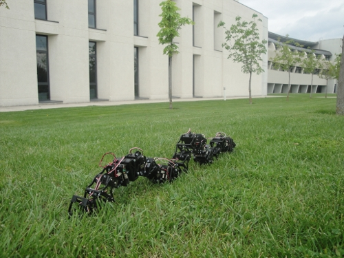
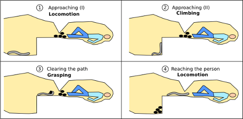
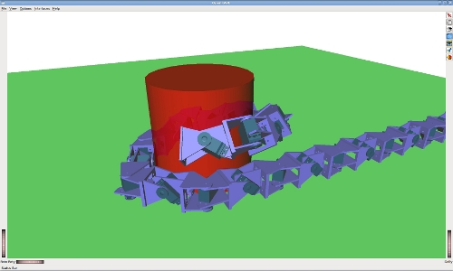
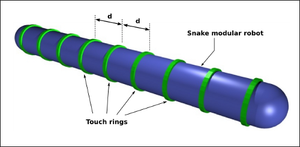

El 3 de Mayo, en el workshop sobre robots modulares del ICRA (en Alaska), presenté el siguiente artículo: Toward the sense of touch in snake modular robots for search and rescue operations (Tanto el artículo como las transparencias están disponibles). A continuación resumiré las ideas principales.
Una de las aplicaciones de los robots modulares gusano/serpiente es la búsqueda y rescate de personas en zonas catastróficas. El cuerpo de las serpientes es muy flexible y se pueden introducir por los recovecos para localizar supervivientes.
Los robots serpiente, al menos, deben tener tres habilidades: Locomoción, capacidad para trepar y destreza para agarrar objetos. Consideremos el siguiente escenario:


Un primer paso para conseguir esas habilidades es dotar a la serpiente del sentido del tacto. Para ello, proponemos la idea de utilizar unos anillos táctiles que se colocan alrededor del cuerpo. Estos anillos están constituidos por una tira de sensores capacitivos, que se enrolla para formar los anillos táctiles.

En el artículo se puede encontrar más información. Aquí os dejo la versión en línea en Scribd:
Paper: Toward the sense of touch in snake modular robots for search and rescue operations